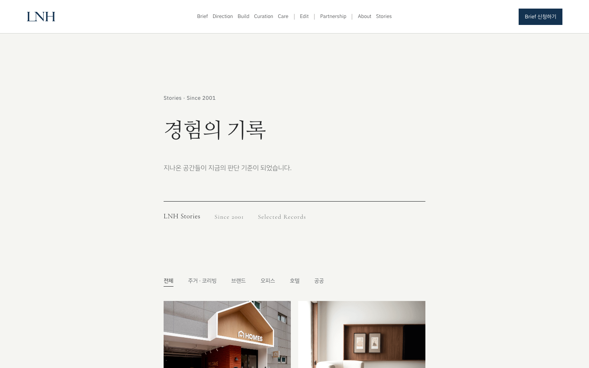
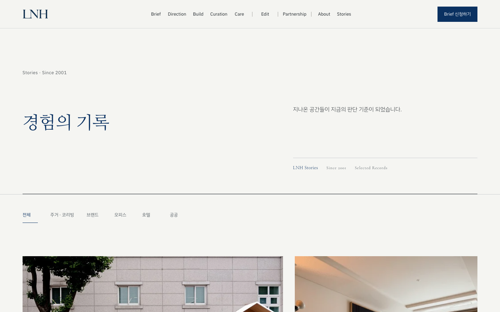

브랜드 위계
LNH Navy, 밝은 페이퍼, 절제된 중성색을 하나의 토큰 체계로 묶고 페이지마다 달랐던 글자 크기와 간격을 같은 기준으로 정렬했습니다.
CURRENT RELEASE / ISOLATED EXPERIMENT
운영 중인 사이트의 내용과 브랜드 자산은 지키면서, 화면 위계·가독성·반응형·성능·구현 일관성을 별도 실험본에서 전면 정리했습니다. 아래 비교는 운영본에 영향을 주지 않습니다.
PRODUCTION UNCHANGEDBEFORE / AFTER


WHAT CHANGED
LNH Navy, 밝은 페이퍼, 절제된 중성색을 하나의 토큰 체계로 묶고 페이지마다 달랐던 글자 크기와 간격을 같은 기준으로 정렬했습니다.
작은 카드 피드 대신 공간과 프로젝트가 먼저 보이는 편집형 아카이브, 철학과 책임 구조가 읽히는 비대칭 About 화면으로 재구성했습니다.
키보드 포커스, 명암 대비, 44px 조작 영역, 단일 H1, 모바일·노트북·데스크톱 오버플로를 전 페이지 단위로 검증했습니다.
Stories 이미지는 필요한 장면만 불러오고 159개 이미지를 WebP로 최적화했습니다. 반복되던 공통 스타일은 하나의 릴리스 파일로 추출했습니다.